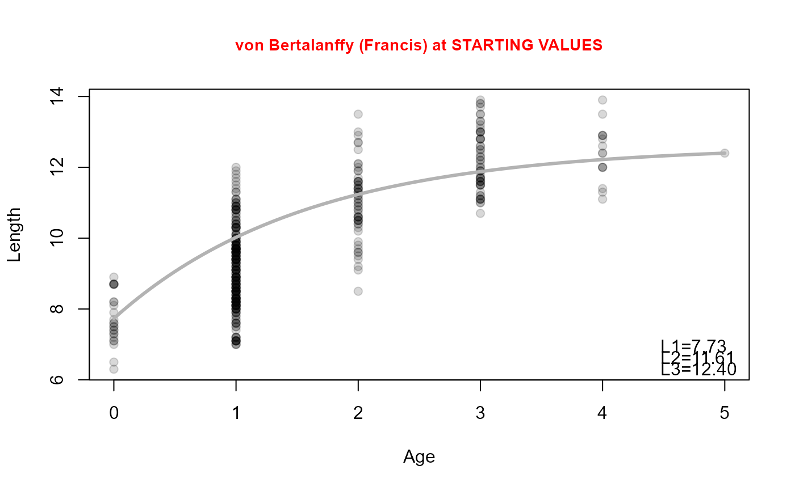
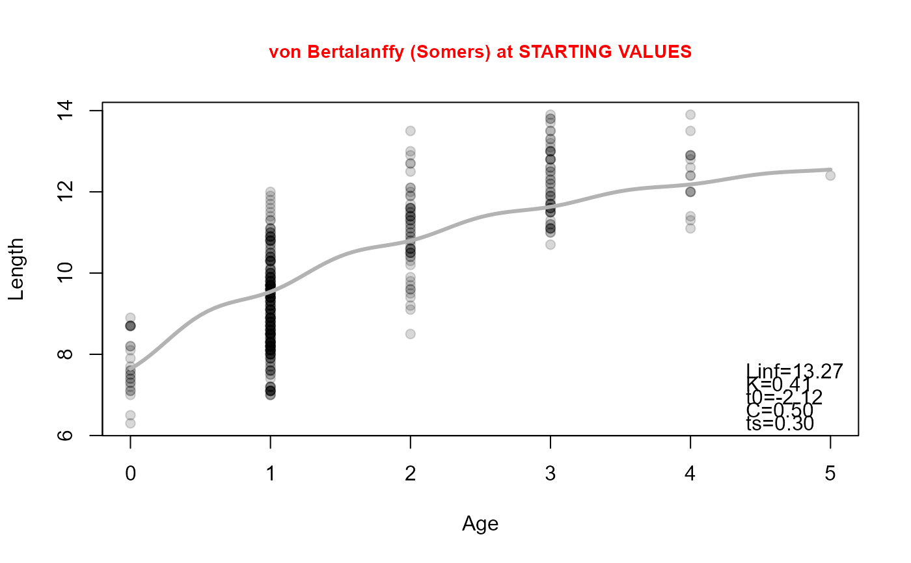

Find reasonable starting values for a von Bertalanffy growth function.
Source:R/vbStarts.R
vbStarts.RdFinds reasonable starting values for the parameters in a specific parameterization of the von Bertalanffy growth function.
vbStarts( formula, data = NULL, param = c("Typical", "typical", "Traditional", "traditional", "BevertonHolt", "Original", "original", "vonBertalanffy", "GQ", "GallucciQuinn", "Mooij", "Weisberg", "Ogle", "Schnute", "Francis", "Somers", "Somers2", "Pauly"), type = param, fixed = NULL, meth0 = c("yngAge", "poly"), methLinf = c("Walford", "oldAge", "longFish"), num4Linf = 1, ages2use = NULL, methEV = c("means", "poly"), valOgle = NULL, plot = FALSE, col.mdl = "gray70", lwd.mdl = 3, lty.mdl = 1, cex.main = 0.9, col.main = "red", dynamicPlot = FALSE, ... )
Arguments
| formula | A formula of the form |
|---|---|
| data | A data frame that contains the variables in |
| type, param | A string that indicates the parameterization of the von Bertalanffy model. |
| fixed | A named list that contains user-defined rather than automatically generated (i.e., fixed) starting values for one or more parameters. See details. |
| meth0 | A string that indicates how the t0 and L0 parameters should be derived. See details. |
| methLinf | A string that indicates how Linf should be derived. See details. |
| num4Linf | A single numeric that indicates how many of the longest fish (if |
| ages2use | A numerical vector of the two ages to be used in the Schnute or Francis parameterizations. See details. |
| methEV | A string that indicates how the lengths of the two ages in the Schnute parameterization or the three ages in the Francis parameterization should be derived. See details. |
| valOgle | A single named numeric that is the set Lr or tr value for use in |
| plot | A logical that indicates whether a plot of the data with the superimposed model fit at the starting values should be created. |
| col.mdl | A color for the model when |
| lwd.mdl | A line width for the model when |
| lty.mdl | A line type for the model when |
| cex.main | A character expansion value for the main title when |
| col.main | A color for the main title when |
| dynamicPlot | DEPRECATED. |
| ... | Further arguments passed to the methods. |
Value
A list that contains reasonable starting values. Note that the parameters will be listed in the same order and with the same names as listed in vbFuns.
Details
This function attempts to find reasonable starting values for a variety of parameterizations of the von Bertalanffy growth function. There is no guarantee that these starting values are the ‘best’ starting values. One should use them with caution and should perform sensitivity analyses to determine the impact of different starting values on the final model results.
If methLinf="Walford", then the Linf and K parameters are estimated via the concept of the Ford-Walford plot. If methLinf="oldAge" then Linf is estimated as the mean length of the num4Linf longest observed lengths.
The product of the starting values for Linf and K is used as a starting value for omega in the GallucciQuinn and Mooij parameterizations. The result of log(2) divided by the starting value for K is used as the starting value for t50 in the Weisberg parameterization.
If meth0="yngAge", then a starting value for t0 or L0 is found by algebraically solving the typical or original parameterization, respectively, for t0 or L0 using the mean length of the first age with more than one data point as a “known” quantity. If meth0="poly" then a second-degree polynomial model is fit to the mean length-at-age data. The t0 starting value is set equal to the root of the polynomial that is closest to zero. The L0 starting value is set equal to the mean length at age-0 predicted from the polynomial function.
Starting values for the L1 and L3 parameters in the Schnute parameterization and the L1, L2, and L3 parameters in the Francis parameterization may be found in two ways. If methEV="poly", then the starting values are the predicted length-at-age from a second-degree polynomial fit to the mean lengths-at-age data. If methEV="means" then the observed sample means at the corresponding ages are used. In the case where one of the supplied ages is fractional, then the value returned will be linearly interpolated between the mean lengths of the two closest ages. The ages to be used for L1 and L3 in the Schnute and Francis parameterizations are supplied as a numeric vector of length 2 in ages2use=. If ages2use=NULL then the minimum and maximum observed ages will be used. In the Francis method, L2 will correspond to the age half-way between the two ages in ages2use=. A warning will be given if L2<L1 for the Schnute method or if L2<L1 or L3<L2 for the Francis method.
Starting values for the Somers and Pauly parameterizations are the same as the traditional parameterization for Linf, K, and t0. However, for the Pauly parameterization the starting value for Kpr is the starting value for K divided by 1 minus the starting value of NGT. The starting values of C, ts, WP, and NGT are set at constants that are unlikely to work for all species. Thus, the user should use the fixed argument to fix starting values for these parameters that are more likely to result in a reliable fit.
Note
The ‘original’ and ‘vonBertalanffy’ and the ‘typical’ and ‘BevertonHolt’ parameterizations are synonymous.
IFAR Chapter
12-Individual Growth.
References
Ogle, D.H. 2016. Introductory Fisheries Analyses with R. Chapman & Hall/CRC, Boca Raton, FL.
See references in vbFuns.
See also
See growthFunShow to display the equations for the parameterizations used in FSA and vbFuns for functions that represent the von Bertalanffy parameterizations. See nlsTracePlot for help troubleshooting nonlinear models that don't converge.
Examples
## Simple examples of each parameterization vbStarts(tl~age,data=SpotVA1)#> $Linf #> [1] 13.26773 #> #> $K #> [1] 0.4114688 #> #> $t0 #> [1] -2.124367 #>vbStarts(tl~age,data=SpotVA1,type="Original")#> $Linf #> [1] 13.26773 #> #> $K #> [1] 0.4114688 #> #> $L0 #> [1] 7.732 #>vbStarts(tl~age,data=SpotVA1,type="GQ")#> $omega #> [1] 5.459258 #> #> $K #> [1] 0.4114688 #> #> $t0 #> [1] -2.124367 #>vbStarts(tl~age,data=SpotVA1,type="Mooij")#> $Linf #> [1] 13.26773 #> #> $L0 #> [1] 7.732 #> #> $omega #> [1] 5.459258 #>vbStarts(tl~age,data=SpotVA1,type="Weisberg")#> $Linf #> [1] 13.26773 #> #> $t50 #> [1] -0.4397993 #> #> $t0 #> [1] -2.124367 #>#> $L1 #> [1] 7.732 #> #> $L2 #> [1] 11.60785 #> #> $L3 #> [1] 12.4 #>#> $L1 #> [1] 7.732 #> #> $L3 #> [1] 12.4 #> #> $K #> [1] 0.4114688 #>vbStarts(tl~age,data=SpotVA1,type="Somers")#> $Linf #> [1] 13.26773 #> #> $K #> [1] 0.4114688 #> #> $t0 #> [1] -2.124367 #> #> $C #> [1] 0.5 #> #> $ts #> [1] 0.3 #>vbStarts(tl~age,data=SpotVA1,type="Somers2")#> $Linf #> [1] 13.26773 #> #> $K #> [1] 0.4114688 #> #> $t0 #> [1] -2.124367 #> #> $C #> [1] 0.5 #> #> $WP #> [1] 0.8 #>vbStarts(tl~age,data=SpotVA1,type="Pauly")#> $Linf #> [1] 13.26773 #> #> $Kpr #> [1] 0.5878125 #> #> $t0 #> [1] -2.124367 #> #> $ts #> [1] 0.3 #> #> $NGT #> [1] 0.3 #>#> $Linf #> [1] 13.26773 #> #> $K #> [1] 0.4114688 #> #> $Lr #> [1] 7.274961 #>#> $Linf #> [1] 13.26773 #> #> $K #> [1] 0.4114688 #> #> $tr #> [1] 0.7521688 #>## Using a different method to find Linf vbStarts(tl~age,data=SpotVA1,methLinf="oldAge")#> $Linf #> [1] 12.4 #> #> $K #> [1] 0.4114688 #> #> $t0 #> [1] -2.374338 #>vbStarts(tl~age,data=SpotVA1,methLinf="oldAge",num4Linf=2)#> $Linf #> [1] 12.40625 #> #> $K #> [1] 0.4114688 #> #> $t0 #> [1] -2.37231 #>vbStarts(tl~age,data=SpotVA1,methLinf="longFish")#> $Linf #> [1] 13.9 #> #> $K #> [1] 0.4114688 #> #> $t0 #> [1] -1.974668 #>vbStarts(tl~age,data=SpotVA1,methLinf="longFish",num4Linf=10)#> $Linf #> [1] 13.64 #> #> $K #> [1] 0.4114688 #> #> $t0 #> [1] -2.033445 #>vbStarts(tl~age,data=SpotVA1,type="Original",methLinf="oldAge")#> $Linf #> [1] 12.4 #> #> $K #> [1] 0.4114688 #> #> $L0 #> [1] 7.732 #>vbStarts(tl~age,data=SpotVA1,type="Original",methLinf="oldAge",num4Linf=2)#> $Linf #> [1] 12.40625 #> #> $K #> [1] 0.4114688 #> #> $L0 #> [1] 7.732 #>vbStarts(tl~age,data=SpotVA1,type="Original",methLinf="longFish")#> $Linf #> [1] 13.9 #> #> $K #> [1] 0.4114688 #> #> $L0 #> [1] 7.732 #>vbStarts(tl~age,data=SpotVA1,type="Original",methLinf="longFish",num4Linf=10)#> $Linf #> [1] 13.64 #> #> $K #> [1] 0.4114688 #> #> $L0 #> [1] 7.732 #>#> $Linf #> [1] 12.40625 #> #> $K #> [1] 0.4114688 #> #> $Lr #> [1] 7.274961 #>#> $Linf #> [1] 13.64 #> #> $K #> [1] 0.4114688 #> #> $tr #> [1] 0.7521688 #>## Using a different method to find t0 and L0 vbStarts(tl~age,data=SpotVA1,meth0="yngAge")#> $Linf #> [1] 13.26773 #> #> $K #> [1] 0.4114688 #> #> $t0 #> [1] -2.124367 #>vbStarts(tl~age,data=SpotVA1,type="original",meth0="yngAge")#> $Linf #> [1] 13.26773 #> #> $K #> [1] 0.4114688 #> #> $L0 #> [1] 7.732 #>## Using a different method to find the L1, L2, and L3 vbStarts(tl~age,data=SpotVA1,type="Francis",ages2use=c(0,5),methEV="means")#> $L1 #> [1] 7.732 #> #> $L2 #> [1] 11.60785 #> #> $L3 #> [1] 12.4 #>#> $L1 #> [1] 7.732 #> #> $L3 #> [1] 12.4 #> #> $K #> [1] 0.4114688 #>## Examples with a Plot vbStarts(tl~age,data=SpotVA1,plot=TRUE)#> $Linf #> [1] 13.26773 #> #> $K #> [1] 0.4114688 #> #> $t0 #> [1] -2.124367 #>vbStarts(tl~age,data=SpotVA1,type="original",plot=TRUE)#> $Linf #> [1] 13.26773 #> #> $K #> [1] 0.4114688 #> #> $L0 #> [1] 7.732 #>vbStarts(tl~age,data=SpotVA1,type="GQ",plot=TRUE)#> $omega #> [1] 5.459258 #> #> $K #> [1] 0.4114688 #> #> $t0 #> [1] -2.124367 #>vbStarts(tl~age,data=SpotVA1,type="Mooij",plot=TRUE)#> $Linf #> [1] 13.26773 #> #> $L0 #> [1] 7.732 #> #> $omega #> [1] 5.459258 #>vbStarts(tl~age,data=SpotVA1,type="Weisberg",plot=TRUE)#> $Linf #> [1] 13.26773 #> #> $t50 #> [1] -0.4397993 #> #> $t0 #> [1] -2.124367 #>#> $L1 #> [1] 7.732 #> #> $L2 #> [1] 11.60785 #> #> $L3 #> [1] 12.4 #>#> $L1 #> [1] 7.732 #> #> $L3 #> [1] 12.4 #> #> $K #> [1] 0.4114688 #>vbStarts(tl~age,data=SpotVA1,type="Somers",plot=TRUE)#> $Linf #> [1] 13.26773 #> #> $K #> [1] 0.4114688 #> #> $t0 #> [1] -2.124367 #> #> $C #> [1] 0.5 #> #> $ts #> [1] 0.3 #>vbStarts(tl~age,data=SpotVA1,type="Somers2",plot=TRUE)#> $Linf #> [1] 13.26773 #> #> $K #> [1] 0.4114688 #> #> $t0 #> [1] -2.124367 #> #> $C #> [1] 0.5 #> #> $WP #> [1] 0.8 #>vbStarts(tl~age,data=SpotVA1,type="Pauly",plot=TRUE)#> $Linf #> [1] 13.26773 #> #> $Kpr #> [1] 0.5878125 #> #> $t0 #> [1] -2.124367 #> #> $ts #> [1] 0.3 #> #> $NGT #> [1] 0.3 #>#> $Linf #> [1] 13.26773 #> #> $K #> [1] 0.4114688 #> #> $Lr #> [1] 7.274961 #>#> $Linf #> [1] 13.26773 #> #> $K #> [1] 0.4114688 #> #> $tr #> [1] 0.7521688 #>## Examples where some parameters are fixed by the user vbStarts(tl~age,data=SpotVA1,fixed=list(Linf=15))#> $Linf #> [1] 15 #> #> $K #> [1] 0.4114688 #> #> $t0 #> [1] -1.760933 #>#> $Linf #> [1] 15 #> #> $K #> [1] 0.3 #> #> $t0 #> [1] -2.41523 #>#> $Linf #> [1] 15 #> #> $K #> [1] 0.3 #> #> $t0 #> [1] -1 #>#> $Linf #> [1] 15 #> #> $K #> [1] 0.3 #> #> $t0 #> [1] -1 #>#> $Linf #> [1] 13.26773 #> #> $Kpr #> [1] 0.5878125 #> #> $t0 #> [1] -1.5 #> #> $ts #> [1] 0.3 #> #> $NGT #> [1] 0.3 #>#> $Linf #> [1] 13.26773 #> #> $K #> [1] 0.4114688 #> #> $Lr #> [1] 10 #>## See examples in vbFuns() for use of vbStarts() when fitting Von B models